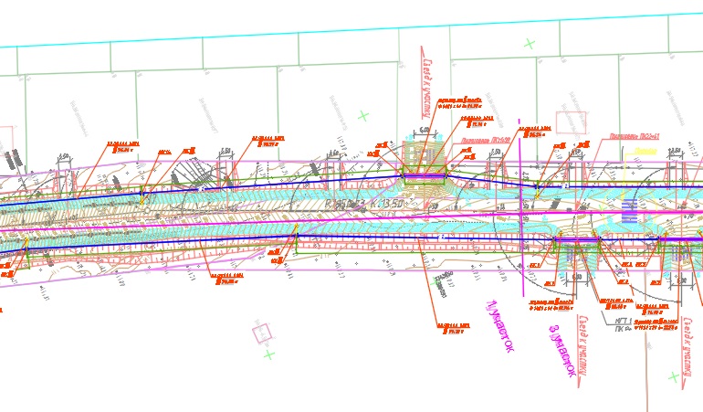

Как выйти из видового экрана на листе в AutoCAD, если затабарились в модели
Знакомая ситуация: зашёл в видовой экран на листе, подвигать рамку или покрутить вид, а выйти обратно не получается. Курсор бегает внутри рамки, сама рамка не выделяется, кнопки на панели серые. Ощущение — как будто ты в палатке, а вход затянуло снегом. На самом деле проблема решается за пять секунд, нужно просто понять, в каком ты пространстве.
Спойлер: вы сейчас в пространстве модели внутри видового экрана. Это отдельный режим, и у него есть свои команды выхода.

Три способа выйти на лист
Способ 1. Через командную строку — самый надёжный. Введите команду: PSPACE или её короткий аналог: PS Нажмите Enter. Система перекинет вас из модели внутри видового экрана прямо в пространство листа. Рамка вьюпорта станет жирной — это знак, что вы вышли.
Способ 2. Двойной клик мышкой. Дважды щёлкните левой кнопкой мыши на пустом сером поле за пределами рамки видового экрана. Это визуальный аналог команды PSPACE. Работает, если вокруг рамки есть свободное место.
Способ 3. Кнопка в строке состояния. В правом нижнем углу окна найдите кнопку с надписью МОДЕЛЬ и кликните по ней. Надпись сменится на ЛИСТ, и вы окажетесь в пространстве листа. Удобно, когда не хочется тянуться к клавиатуре.
Если видовой экран развёрнут на весь экран
Бывает, что видовой экран растянули на весь чертёж командой VPMAX. В этом случае «пустого поля» вокруг рамки нет — кликать некуда, и первые два способа не сработают.
Решение: введите в командной строке: VPMIN Рамка вьюпорта сожмётся до своих обычных размеров, и вы автоматически вернётесь в пространство листа. Дальше можно работать как обычно.
Если ничего не помогает
Проверьте вкладки в самом низу окна AutoCAD. Скорее всего, вы случайно переключились на глобальную вкладку «Модель» — это не то же самое, что модель внутри видового экрана. В этом случае вы вообще не на листе. Просто кликните по вкладке нужного листа (например, «Лист1») — и всё встанет на места.
Зачем вообще выходить
Как только вы в пространстве листа, рамка видового экрана становится обычным объектом — её можно выделить, перетащить, растянуть или повернуть. Именно в этот момент работает связка из прошлой статьи: при системной переменной VPROTATEASSOC = 1 команда ПОВЕРНУТЬ крутит только вид внутри рамки. Топооснова в модели остаётся на своих геодезических координатах, и ничего не едет.
Запомните связку: PSPACE — чтобы выйти, VPMAX/VPMIN — чтобы развернуть и свернуть экран, VPROTATEASSOC — чтобы поворот вида не ломал модель. Три команды, которые закрывают 90% вопросов при работе с листами.